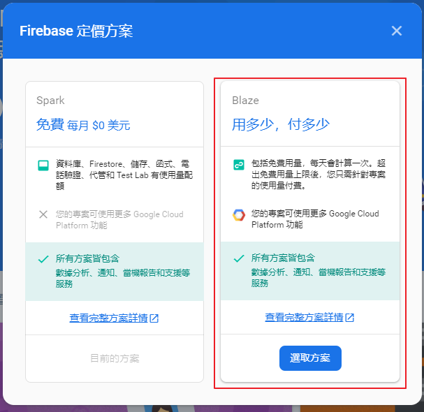
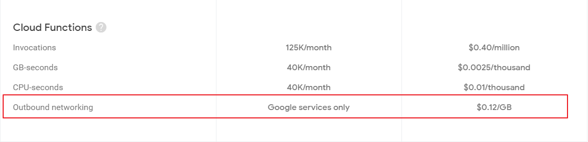
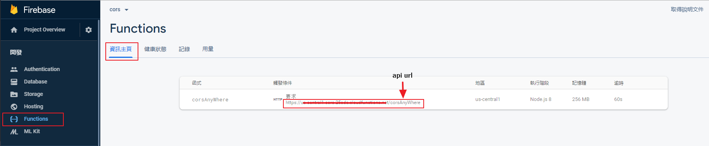

利用 firebase 建立自己的 CORS Anywhere
前言
有時候在串接外部 API 或是公司內部的 API，都可能會遇到跨域存取 ( CORS ) 的問題
外部 API 因為安全性的問題所以會限制網域，需要透過後端取得資料來繞過這個驗證，但是開發時負責後端的人又都不肯幫忙先處理!?
串接內部 API 的時候，討人厭的後端 API 又不給我 localhost 使用，不然是要怎麼測試!
當遇到討厭的後端，不肯幫忙的後端，除了請其他願意幫忙的後端協助揍他以外，有時候也會透過一些服務來幫處理 CORS 的問題，例如: CORS Anywhere
除了利用別人提供的服務，要自己建立一個簡易 CORS Anywhere 也並非難事哩
簡易說明
- 借用 google 的力量，省去自架 server 的力氣
- 建立 firebase 專案
- 利用 Cloud functions 建立自己的 API
- 這支 API 的工作就是去取回外部 API 的資料並回傳
- 這就是你自己的 CORS Anywhere
設定 firebase
要利用 Cloud functions 從外部 API 取回資料，需先更改收費方式


費用不高，基本上不會超過免費額度
撰寫 functions
快速建立 firebase 開發環境 (可參考 docs)
- 建立一個資料夾
- 開啟 command line
依序執行以下指令
1
2
3npm install -g firebase-tools
firebase login
firebase init依照指示就可以把專案建起來了!
編輯 index.js
Cloud Functions 的基本架構是利用 Node.js 及 Express.js 建立的環境， index.js 就是 Cloud Functions 預設的路由
安裝使用到的套件 axios1
2
3
4
5# 進入 functions 目錄底下安裝
cd functions
# 存到 package.json 佈署時才會正確安裝
npm install axios --save
1 | const functions = require('firebase-functions'); |
關於存取限制可以參考 MDN 伺服器端存取控制（CORS） 來做設定
佈署 functions
輸入指令後就可以了!!1
firebase deploy --only functions

之後就可以在 Firebase > Functions 中找到自己的 API url 來使用哩!